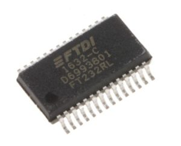
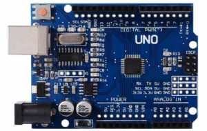
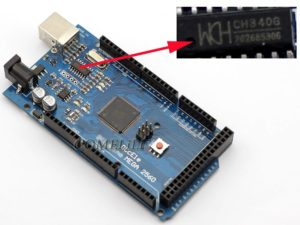
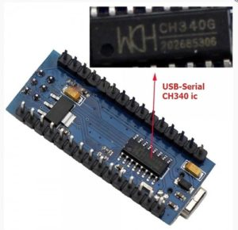
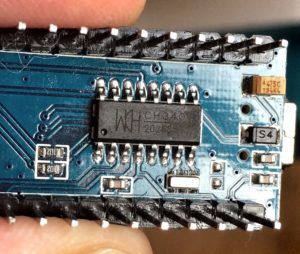
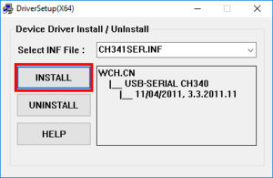
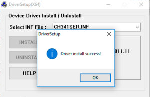
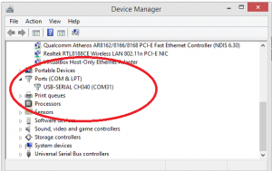
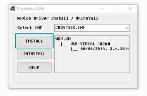
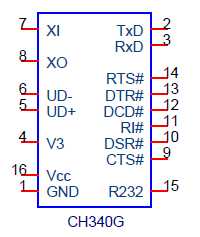

Arduino USB UART чипы и драйвера CH340, CH340G, FTDI
Чипы FTDI, CH340, ATMEGA16U2 с драйверами позволяют плате Arduino и USB адаптерам подключаться к компьютеру и взаимодействовать с внешним окружением через Serial UART. С их помощью Ардуино может скачивать прошивку, загружать и отправлять данные, не заботясь о низкоуровневой поддержке последовательного соединения. В платах разных производителей могут использоваться различные чипы и драйвера.
В этой статье мы рассмотрим наиболее популярные микросхемы и узнаем, как скачать и установить соответствующие драйвера для нормальной работы Arduino Uno, Nano, Mega и другими платами.
Содержание [скрыть]
Чипы CH340g, FTDI FT232, ATMEGA 16U2 / 8U2
Обычно с чипами USB преобразователей и поиском драйверов сталкиваются в тот момент, когда возникает проблема подключения платы к компьютеру. Скорее всего, вы тоже нашли эту статью, пытаясь заставить Arduino IDE взаимодействовать с китайской ардуинкой. Давайте разберемся, какую роль во взаимодействии с компьютером играет чип преобразователя и зачем устанавливать какие-то драйверы, чтобы все заработало.
Зачем нужен USB / UART TTL преобразователь
Когда вы подключаете Ардуино к компьютеру или любому другому устройству по USB, вы связываете между собой сразу два мира: микропроцессорный, сосредоточенный на плате Arduino и мир внешних устройств. Подходы к организации взаимодействия между элементами в этих мирах сильно отличаются. Для работы внутри платы используется особый протокол со своими правилами взаимодействия – UART. И для того, чтобы “внутреннюю” линию соединить с “внешней” нужен определенный преобразователь-посредник, который будет хорошо понимать физические сигналы, используемые как для USB, так и для платы контроллера. Вот этим посредником и являются чипы USB- UART (иногда их еще обозначают называют USB-TTL, хотя это не совсем корректно) преобразователей, самыми популярными из которых являются микросхемы FTDI, CH340G, ATMEGA U16.
Мы должны использовать внешние чипы, потому что контроллер ATMEGA328, являющийся сердцем большинства современных плат Arduino, не содержит в своих кристаллических внутренностях встроенного преобразователя. Если вы посмотрите на плату ардуино, то увидите корпус чипа, на нем можно разобрать и его тип.
   
Исторически наиболее популярным вариантом чипов USB/UART конвертера была линейка микросхем от шотландского производителя FTDI. Главным ее недостатком была стоимость и весьма странная политика в области контроля контрафакта, зачастую приводящая к тому, что легальные купленные устройства блокировались драйверами компании. Сегодня существенную конкуренцию FTDI составляют микросхемы семейства CH340, массово производимые многочисленными китайскими производителями. Они гораздо дешевле и достаточно надежны и это постепенно привело к тому, что в большинстве недорогих контроллеров Arduino и адаптеров установлены именно чипы CH340 (CH340g).
Наверное, единственной, но очень важной проблемой при использовании CH340g взамен FTDI является необходимость в некоторых случаях установки USB драйвера. “Респектабельная” FTDI давно уже тесно интегрирована в Windows и при подключении устройства с FTDI-преобразователем никаких драйвером устанавливать не нужно – они уже есть в системе. Для подключения CH340g иногда нужно скачать драйвер и установить его – только после этого система увидит наше устройство.
Процедура установки драйвера для CH340g на самом деле очень проста и почти всегда проходит без ошибок на самых популярных операционных системах Windows7, Windows10. Именно поэтому никаких проблем с использованием недорогих ардуино плат, несущих на себе чип CH340, почти никогда не возникает.
Остается только вопрос – а зачем вообще нужен какой-то USB драйвер для подключения ардуино к компьютеру? Давайте разберемся.
Мы не будем уходить в теоретические дебри, разбирая многочисленные коммуникационные протоколы, поддерживаемые современными компьютерными системами. Главное, что нужно понимать: когда мы присоединяем какое-то устройство к компьютеру, оно может передавать или получать данные только если его “поймут” с другой стороны. На стороне компьютера таким переводчиком является специальная программа, называемая драйвером. Драйвер USB работает в режиме эмуляции последовательного, COM-порта. Это означает, что при подключении операционная система создает виртуальные, программные COM-порты, с которыми и работает драйвер. В Windows их можно посмотреть в диспетчере устройств.
Если мы подключаем Ардуино к компьютеру, то чип с помощью драйвера попросит систему открыть порт и начнет взаимодействие . И для чипов разных производителей потребуются разные драйвера. Проблемы возникают, когда драйвера нет. Система пытается найти его для подключенного устройства, не находит и мы никогда не увидим его в списке устройств. Для решения проблемы надо найти и скачать соответствующие драйвера, а затем установить их на компьютер. Ниже мы рассмотрим, как это делается на примере USB драйвера CH340.
Китайские микросхемы CH340 используется довольно часто благодаря своей низкой стоимости и вполне приемлемому качеству.
В серию микросхем CH340 входят CH340T (мост USB – UART), CH340R (мост USB – IrDA) и CH340G (мост USB – UART). Последняя микросхема является наиболее распространенной и удобной с точки зрения корпуса с меньшим числом выводов.
Если в вашей системе отсутствует драйвер, его можно легко установить. Процедура занимает 5 минут и практически никогда не вызывает проблем. Скачать драйвер для CH340 можно по этой ссылке.
Процесс установки драйвера разбивается на несколько шагов:
   
Микросхема обладает следующими характеристиками и возможностями:
Распиновка микросхемы CH340G представлена на рисунке.

На плате обозначены следующие контакты:
1 – Земля.
2 – TXD сигнал UART.
3 – RXD сигнал UART.
4 – напряжение питания.
5 – UD+ сигнал USB.
6 – UD- сигнал USB.
7 – XI вход для кварцевого резонатора и конденсатора.
8 – XO выход для кварцевого резонатора и конденсатора.
9 – CTS сигнал UART.
10 – DSR сигнал UART.
11 – RI сигнал UART.
12 – DCD сигнал UART.
13 – DTR сигнал UART.
14 – RTS сигнал UART.
15 – Включение инверсии входа RXD.
16 – Питание.
Микросхема эмулирует работу последовательного порта. Все приложения работают с конвертером интерфейса CH340G без изменения кода.
Шотландская фирма FTDI занимается разработкой аппаратных мостов “USB-UART” и “USB-FIFO”. Производство началось с запуска и продажи схем FT8U232 и FT8U245, которые в итоге стали очень популярными и востребованными на рынке устройств с USB. Эти виды микросхем имели всего лишь 1 режим работы и огромное количество дополнительных внешних элементов.
Следующим поколением аппаратных мостов были микросхемы FT232B и FT245B. В них добавился новый режим работы BitBang, также появилась возможность реализации восьми независимых линий ввода-вывода. Помимо этого была изменена схемотехника кристалла.
С 2006 года начался выпуск микросхем FT232R и FT245R, в которых были интегрированы на кристалл энергонезависимая память, тактовый генератор и другие компоненты. Основными преимуществами микросхемы FT232RL являются хорошая функциональность, легкость монтажа и минимальная обвязка. Распиновка модуля представлена на рисунке ниже.
Характеристики микросхемы FT232R:
Микросхема предоставляется с заранее запрограммированной памятью EEPROM, поэтому дополнительное программирование энергонезависимой памяти перед началом работы не требуется.
Чип ATMEGA16U2/8U2 для ардуино
Чипы ATMEGA16U2/8U2 используются в качестве моста между USB-портом и последовательным портом. Версия платы ATmega8u2 использовалась для предыдущих плат Ардуино Uno и Mega.
Технические характеристики чипа ATMEGA16U2:
Контроллер ATmega8u2 в своей прошивке уже имеет установленные USB COM драйвера, поэтому установка дополнительных не требуется.
Характеристики ATmega8u2:
Микросхемы-контроллеры последовательного порта служат в качестве преобразователя интерфейса USB. Наиболее популярными являются микросхемы CH340 (преобразователь USB в UART), аппаратные мосты от фирмы FTDI, к которым относятся микросхемы FT8U232, FT8U245, FT232R и FT245R (USB-UART и USB – FIFO) и ATmega8U2 и ATmega16U2.